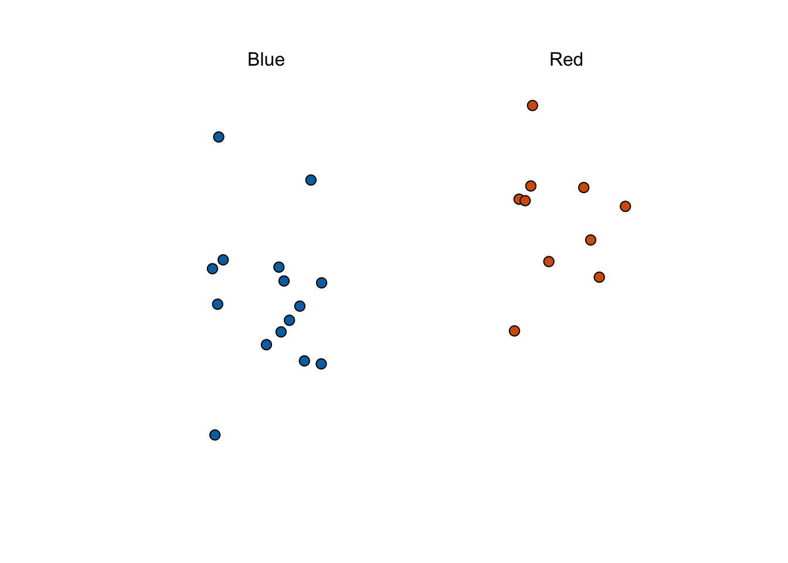
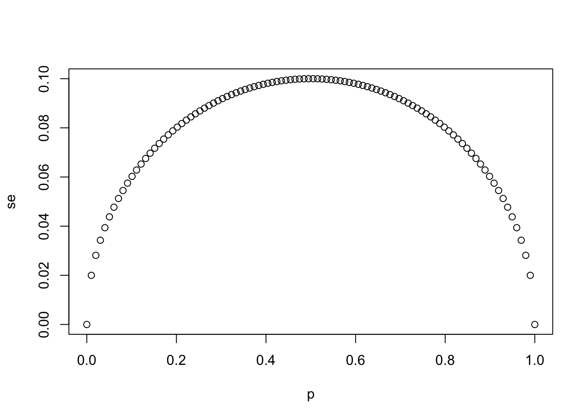
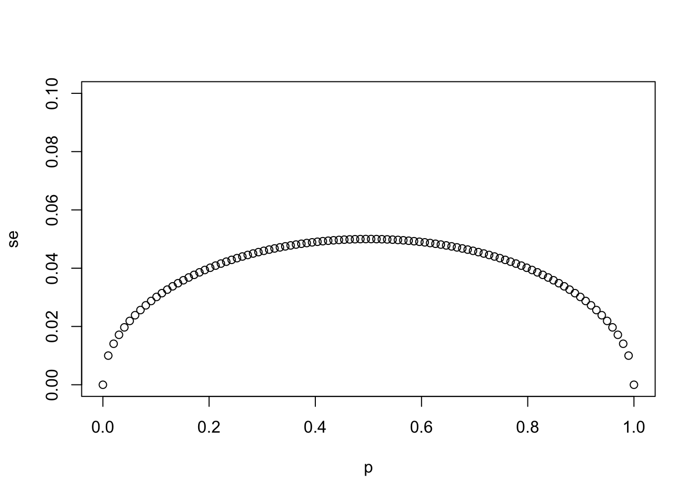
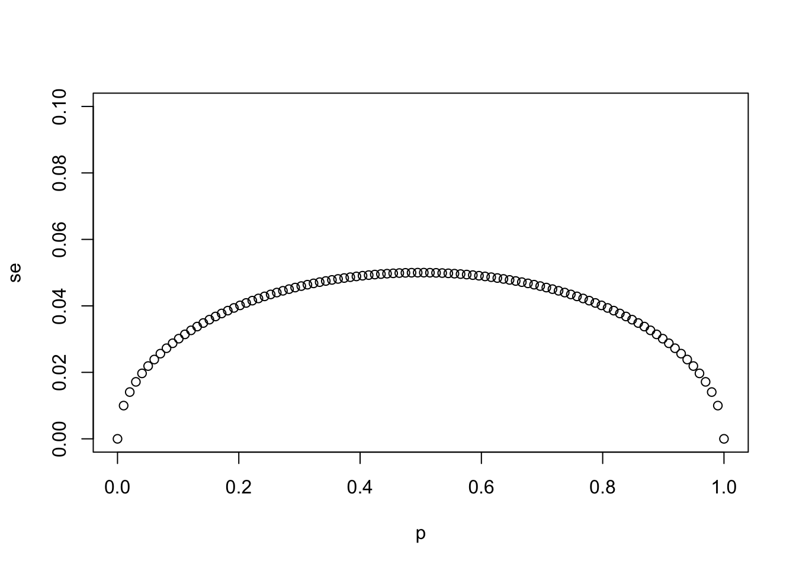

2 Section 1 Overview
Section 1 introduces you to parameters and estimates.
After completing Section 1, you will be able to:
- Understand how to use a sampling model to perform a poll.
- Explain the terms population, parameter, and sample as they relate to statistical inference.
- Use a sample to estimate the population proportion from the sample average.
- Calculate the expected value and standard error of the sample average.
2.1 Sampling Model Parameters and Estimates
The textbook for this section is available here and here; first part.
Key points
- The task of statistical inference is to estimate an unknown population parameter using observed data from a sample.
- In a sampling model, the collection of elements in the urn is called the population.
- A parameter is a number that summarizes data for an entire population.
- A sample is observed data from a subset of the population.
- An estimate is a summary of the observed data about a parameter that we believe is informative. It is a data-driven guess of the population parameter.
- We want to predict the proportion of the blue beads in the urn, the parameter \(p\) . The proportion of red beads in the urn is \(1 - p\) and the spread is \(2p - 1\).
- The sample proportion is a random variable. Sampling gives random results drawn from the population distribution.
Code: Function for taking a random draw from a specific urn
The dslabs package includes a function for taking a random draw of size \(n\) from the urn:
if(!require(tidyverse)) install.packages("tidyverse")## Loading required package: tidyverse## ── Attaching packages ───────────────────────────────────────────────────────────────────────────────────────────────────────────────────────────────────────────── tidyverse 1.3.0 ──## ✓ ggplot2 3.3.2 ✓ purrr 0.3.4
## ✓ tibble 3.0.3 ✓ dplyr 1.0.2
## ✓ tidyr 1.1.2 ✓ stringr 1.4.0
## ✓ readr 1.3.1 ✓ forcats 0.5.0## ── Conflicts ──────────────────────────────────────────────────────────────────────────────────────────────────────────────────────────────────────────────── tidyverse_conflicts() ──
## x dplyr::filter() masks stats::filter()
## x dplyr::lag() masks stats::lag()if(!require(dslabs)) install.packages("dslabs")## Loading required package: dslabslibrary(tidyverse)
library(dslabs)
take_poll(25) # draw 25 beads
2.2 The Sample Average
The textbook for this section is available here and here.
Key points
- Many common data science tasks can be framed as estimating a parameter from a sample.
- We illustrate statistical inference by walking through the process to estimate \(p\). From the estimate of \(p\), we can easily calculate an estimate of the spread, \(2p - 1\).
- Consider the random variable \(X\) that is 1 if a blue bead is chosen and 0 if a red bead is chosen. The proportion of blue beads in \(N\) draws is the average of the draws \(X_1,...,X_N\).
- \(\bar{X}\) is the sample average. In statistics, a bar on top of a symbol denotes the average. \(\bar{X}\) is a random variable because it is the average of random draws - each time we take a sample, \(\bar{X}\) is different.
\(\bar{X} = \frac{X_1+X_2+...+X_N}{N}\)
- The number of blue beads drawn in N draws, \(N\bar{X}\), is \(N\) times the proportion of values in the urn. However, we do not know the true proportion: we are trying to estimate this parameter \(p\).
2.3 Polling versus Forecasting
The textbook for this section is available here.
Key points
- A poll taken in advance of an election estimates \(p\) for that moment, not for election day.
- In order to predict election results, forecasters try to use early estimates of \(p\) to predict \(p\) on election day. We discuss some approaches in later sections.
2.4 Properties of Our Estimate
The textbook for this section is available here.
Key points
- When interpreting values of \(\bar{X}\), it is important to remember that \(\bar{X}\) is a random variable with an expected value and standard error that represents the sample proportion of positive events.
- The expected value of \(\bar{X}\) is the parameter of interest \(p\). This follows from the fact that \(\bar{X}\) is the sum of independent draws of a random variable times a constant \(1/N\).
\(\mbox{E}(\bar{X}) = p\)
- As the number of draws \(N\) increases, the standard error of our estimate \(\bar{X}\) decreases. The standard error of the average of \(\bar{X}\) over \(N\) draws is:
\(\mbox{SE}(\bar{X}) = \sqrt{p(1-p)/N}\)
- In theory, we can get more accurate estimates of \(p\) by increasing \(N\). In practice, there are limits on the size of \(N\) due to costs, as well as other factors we discuss later.
- We can also use other random variable equations to determine the expected value of the sum of draws \(\mbox{E}(S)\) and standard error of the sum of draws \(\mbox{SE}(S)\).
\(\mbox{E}(S) = Np\)
\(\mbox{SE}(S) = \sqrt{Np(1-p)}\)
2.5 Assessment - Parameters and Estimates
- Suppose you poll a population in which a proportion \(p\) of voters are Democrats and \(1-p\) are Republicans.
Your sample size is \(N = 25\). Consider the random variable \(S\), which is the total number of Democrats in your sample.
What is the expected value of this random variable \(S\)?
- A. \(\mbox{E}(S) = 25(1−p)\)
- B. \(\mbox{E}(S) = 25p\)
- C. \(\mbox{E}(S) = \sqrt{25p(1−p)}\)
- D. \(\mbox{E}(S) = p\)
- Again, consider the random variable \(S\), which is the total number of Democrats in your sample of 25 voters.
The variable \(p\) describes the proportion of Democrats in the sample, whereas \(1-p\) describes the proportion of Republicans.
What is the standard error of \(S\)?
- A. \(\mbox{SE}(S) = 25p(1−p)\)
- B. \(\mbox{SE}(S) = \sqrt{25p}\)
- C. \(\mbox{SE}(S) = 25(1−p)\)
- D. \(\mbox{SE}(S) = \sqrt{25p(1−p)}\)
- Consider the random variable \(S/N\), which is equivalent to the sample average that we have been denoting as \(\bar{X}\).
The variable \(N\) represents the sample size and \(p\) is the proportion of Democrats in the population.
What is the expected value of \(\bar{X}\)?
- A. \(\mbox{E}(\bar{X}) = p\)
- B. \(\mbox{E}(\bar{X}) = Np\)
- C. \(\mbox{E}(\bar{X}) = N(1−p)\)
- D. \(\mbox{E}(\bar{X}) = 1−p\)
- What is the standard error of the sample average, \(\bar{X}\)?
The variable \(N\) represents the sample size and \(p\) is the proportion of Democrats in the population.
- A. \(\mbox{SE}(\bar{X}) = \sqrt{Np(1−p)}\)
- B. \(\mbox{SE}(\bar{X}) = \sqrt{p(1−p)/N}\)
- C. \(\mbox{SE}(\bar{X}) = \sqrt{p(1−p)}\)
- D. \(\mbox{SE}(\bar{X}) = \sqrt N\)
- Write a line of code that calculates the standard error
seof a sample average when you poll 25 people in the population.
Generate a sequence of 100 proportions of Democrats p that vary from 0 (no Democrats) to 1 (all Democrats).
Plot se versus p for the 100 different proportions.
# `N` represents the number of people polled
N <- 25
# Create a variable `p` that contains 100 proportions ranging from 0 to 1 using the `seq` function
p <- seq(0, 1, length.out = 100)
# Create a variable `se` that contains the standard error of each sample average
se <- sqrt(p * (1 - p)/N)
# Plot `p` on the x-axis and `se` on the y-axis
plot(p,se)
- Using the same code as in the previous exercise, create a for-loop that generates three plots of
pversussewhen the sample sizes equal \(N = 25\), \(N = 100\), and \(N = 1000\).
# The vector `p` contains 100 proportions of Democrats ranging from 0 to 1 using the `seq` function
p <- seq(0, 1, length = 100)
# The vector `sample_sizes` contains the three sample sizes
sample_sizes <- c(25, 100, 1000)
# Write a for-loop that calculates the standard error `se` for every value of `p` for each of the three samples sizes `N` in the vector `sample_sizes`. Plot the three graphs, using the `ylim` argument to standardize the y-axis across all three plots.
for (N in sample_sizes)
{
se <- sqrt(p * (1 - p)/N)
plot(p,se,ylim = c(0,0.1))
} 

- Our estimate for the difference in proportions of Democrats and Republicans is \(d = \bar{X} − (1 − \bar{X})\).
Which derivation correctly uses the rules we learned about sums of random variables and scaled random variables to derive the expected value of \(d\)
- A. \(\mbox{E} \left[\bar{X} − (1 − \bar{X}) \right] = \mbox{E} \left[2 \bar{X} − 1 \right] = 2\mbox{E} \left[\bar{X} \right] - 1 = N(2p − 1) = Np − N(1 − p)\)
- B. \(\mbox{E} \left[\bar{X} − (1 − \bar{X}) \right] = \mbox{E} \left[\bar{X} − 1 \right] = \mbox{E} \left[\bar{X} \right] − 1 = p − 1\)
- C. \(\mbox{E} \left[\bar{X} − (1 − \bar{X}) \right] = \mbox{E} \left[2 \bar{X} − 1 \right] = 2\mbox{E} \left[\bar{X} \right] - 1 = 2 \sqrt{p(1 − p)} − 1 = p − (1 − p)\)
- D. \(\mbox{E} \left[\bar{X} − (1 − \bar{X}) \right] = \mbox{E} \left[2 \bar{X} − 1 \right] = 2\mbox{E} \left[\bar{X} \right] - 1 = 2p − 1 = p − (1 − p)\)
- Our estimate for the difference in proportions of Democrats and Republicans is \(d = \bar{X} − (1 − \bar{X})\).
Which derivation correctly uses the rules we learned about sums of random variables and scaled random variables to derive the standard error of \(d\)?
- A. \(\mbox{SE} \left[\bar{X} − (1 − \bar{X}) \right] = \mbox{SE} \left[2 \bar{X} − 1 \right] = 2\mbox{SE} \left[\bar{X} \right] = 2 \sqrt{p/N}\)
- B. \(\mbox{SE} \left[\bar{X} − (1 − \bar{X}) \right] = \mbox{SE} \left[2 \bar{X} − 1 \right] = 2\mbox{SE} \left[\bar{X} - 1 \right] = 2 \sqrt{p(1 − p)/N} − 1\)
- C. \(\mbox{SE} \left[\bar{X} − (1 − \bar{X}) \right] = \mbox{SE} \left[2 \bar{X} − 1 \right] = 2\mbox{SE} \left[\bar{X} \right] = 2 \sqrt{p(1 − p)/N}\)
- D. \(\mbox{SE} \left[\bar{X} − (1 − \bar{X}) \right] = \mbox{SE} \left[\bar{X} − 1 \right] = \mbox{SE} \left [\bar{X} \right] = \sqrt{p(1 − p)/N}\)
- Say the actual proportion of Democratic voters is \(p = 0.45\).
In this case, the Republican party is winning by a relatively large margin of \(d = -0.1\), or a 10% margin of victory. What is the standard error of the spread \(2 \bar{X} − 1\) in this case?
# `N` represents the number of people polled
N <- 25
# `p` represents the proportion of Democratic voters
p <- 0.45
# Calculate the standard error of the spread. Print this value to the console.
2*sqrt((p*(1-p)/N))## [1] 0.1989975- So far we have said that the difference between the proportion of Democratic voters and Republican voters is about 10% and that the standard error of this spread is about 0.2 when \(N = 25\).
Select the statement that explains why this sample size is sufficient or not.
- A. This sample size is sufficient because the expected value of our estimate \(2 \bar{X} − 1\) is \(d\) so our prediction will be right on.
- B. This sample size is too small because the standard error is larger than the spread.
- C. This sample size is sufficient because the standard error of about 0.2 is much smaller than the spread of 10%.
-
D. Without knowing
p, we have no way of knowing that increasing our sample size would actually improve our standard error.